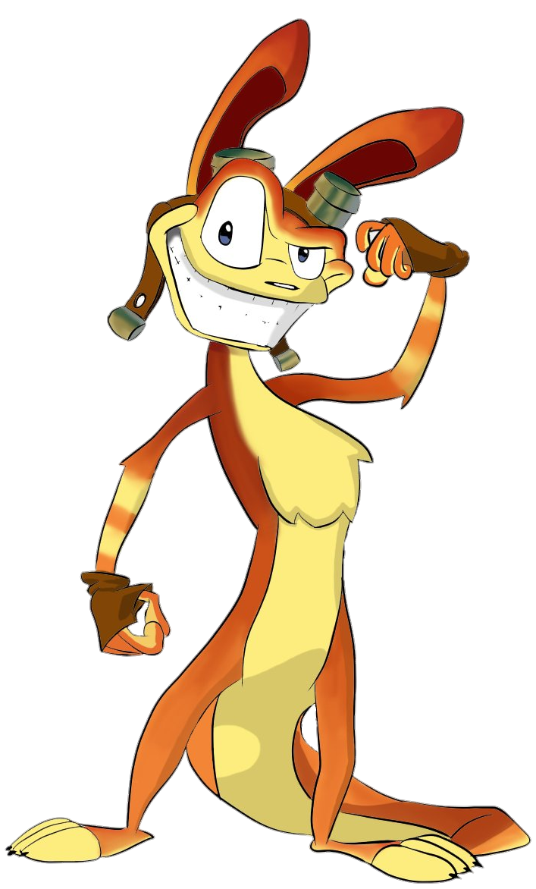
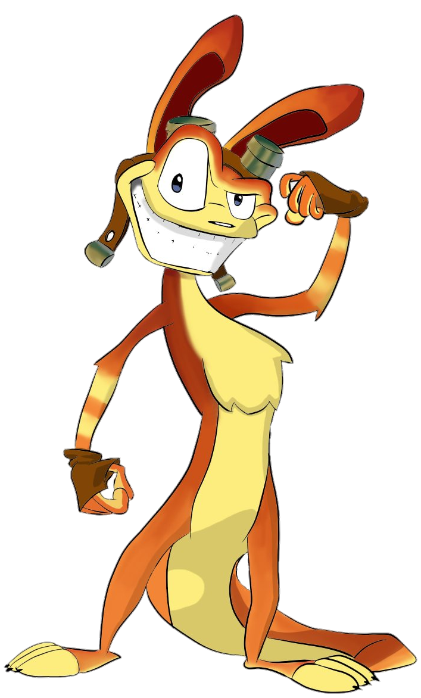

After falling into a container of dark eco, Daxter transformed from a humanoid elf to an ottsel. His persona though, did not change. He is still a very loud mouthed character who is preverted in ways humans could not reach. After Jak and Daxter's first adventure to help Daxter trasnform back to his original specie, Daxter decided to stay as an ottsel as it he as stuck in an ultimatum to wether the eco to trasnform or to save his world. For the rest of his life, Daxter lived on Jak's shoulder missing the days where he got to wear pants, but ultimately, the adventures he has been through make up for that void.